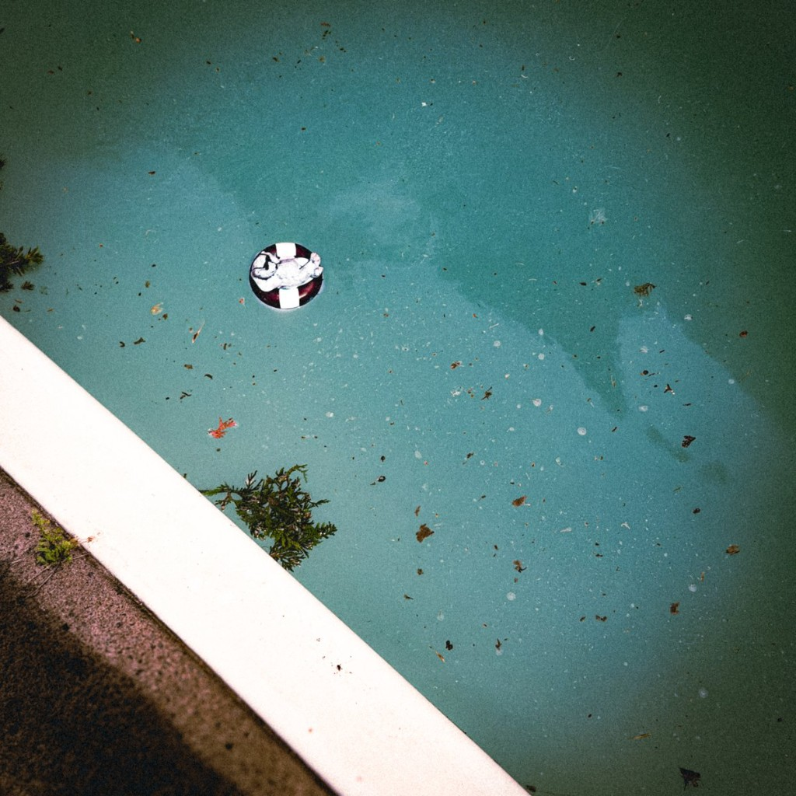

equynox
un nouvel album —
equynox
pré-sauvegarder écoute equynox en premier admit onesortie le 18 septembre 2026
souvenirs
des instantanés qui gardent la chaleur du voyage


11 morceaux
la tracklist
01
Équinoxe (Intro)
ne manque rien
pré-sauvegarder
sur spotify / apple music
admit one
pré-sauvegarde equynox
la boutique
cd, vinyle et merch
la boutique n'est pas encore ouverte — ajoute ici tes cd, vinyles et objets dérivés dès qu'ils seront prêts. en attendant, un simple mot suffit pour garder les gens à l'affût.
boutique bientôt disponible